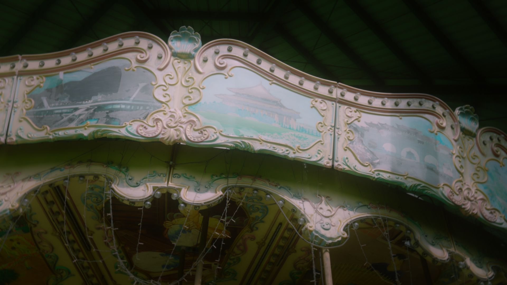
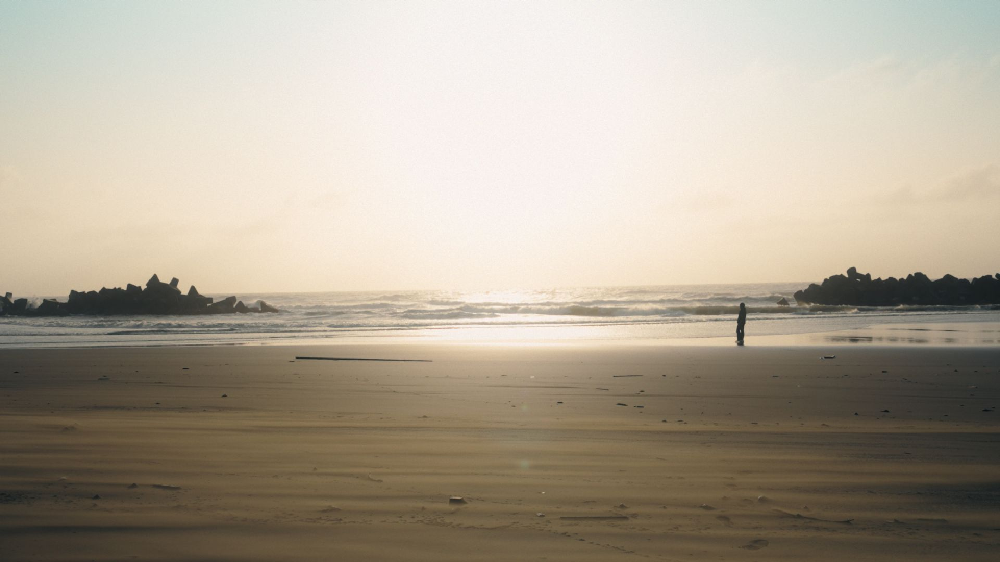
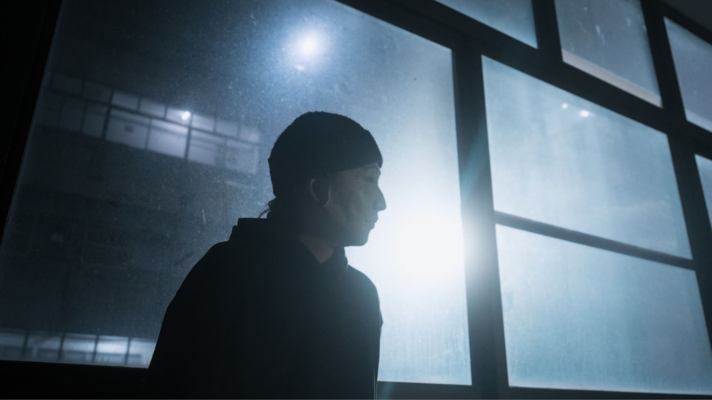
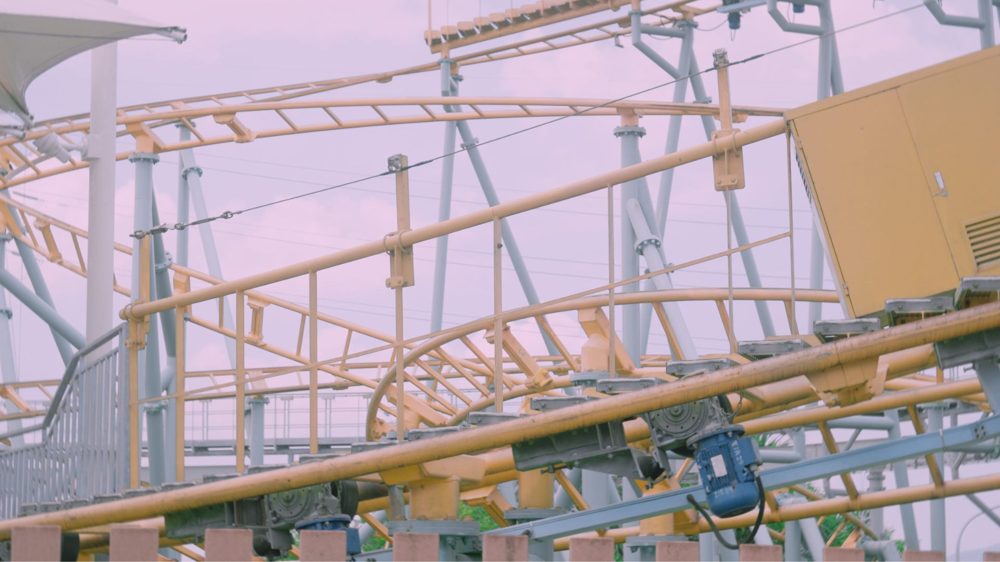
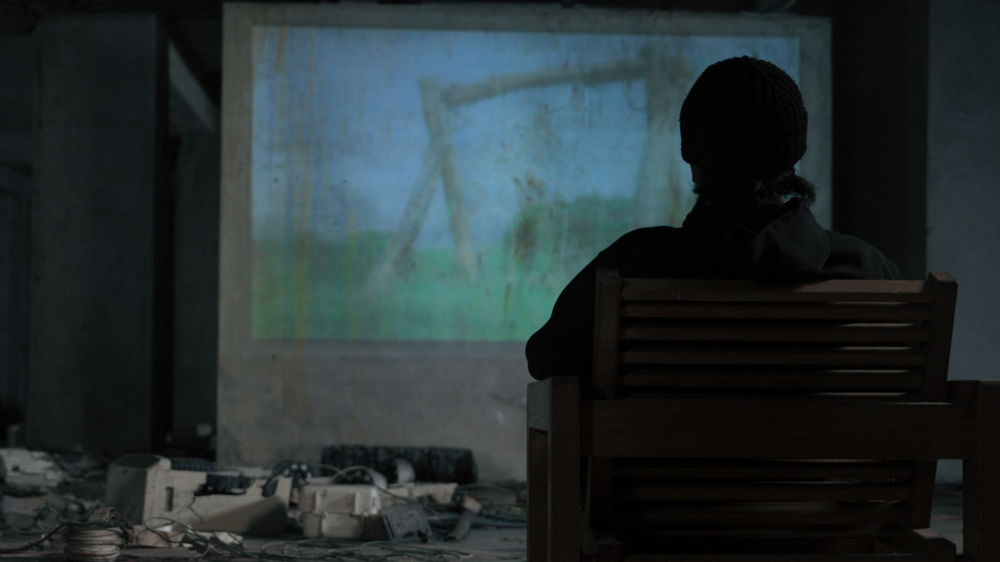
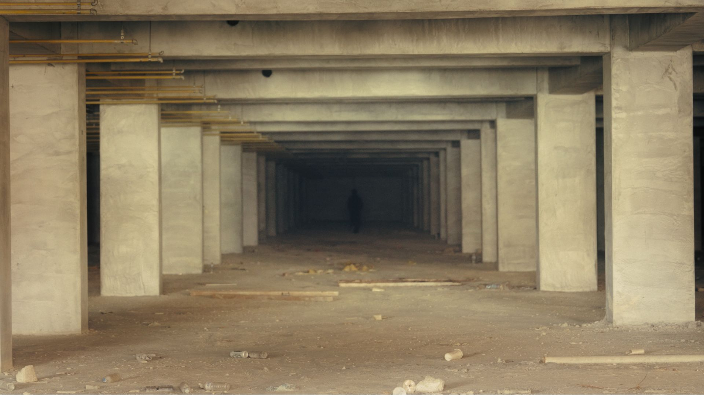
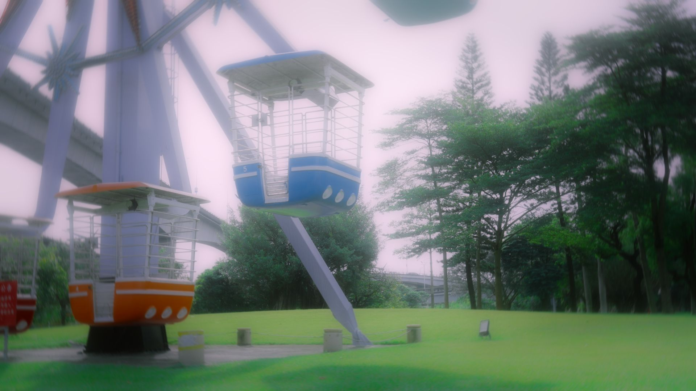
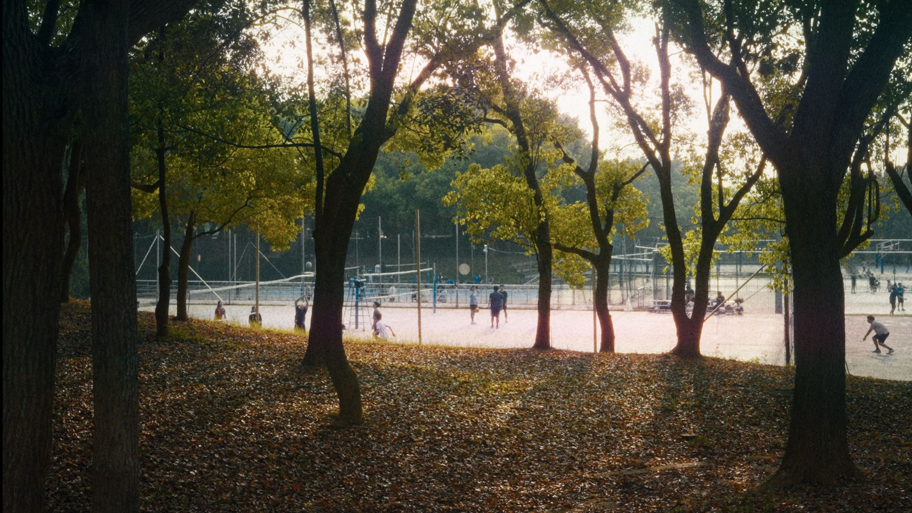
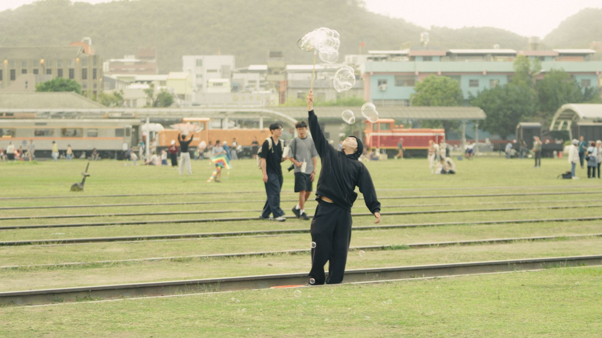

Level 404

Loading Level 404... 0%

「這是屬於我的反叛 / 此生就這樣默默存在」
來自「Level 404」的邀請函，逃避與閾限迷航的虛無世代縮影。

「I hate it, but I love it / 自戀又自卑到無可救藥的你」
求學經歷造就了自戀又自卑的矛盾心理狀態，像希臘神話中的納希瑟斯一樣凝視自我的倒影，自棄卻又自由，落寞卻又上癮。

「今天的太陽又要升起 / 對生活的滿腔熱情 / 又船過水無痕地在惺忪睡意中消散殆盡」
描寫每天熬夜的心理狀態：思想的巨人，行動的侏儒；在日復一日的期望與落空中逐漸麻木。

「我的診所裡要有很多玩具 / 我的診所裡要有太空梭」
揠苗助長後的系統過載。用電子碎拍與千禧年遊戲的 8-bit 音色，打造歡快卻壓抑的氛圍，感嘆再也回不去的單純。

「Welcome back to the distant land, Never want you to become Peter Pan」
輸入卡通頻道碼，喚醒兒時的程序。在如今二十二歲的年紀，向拒絕長大的自己發出對話。

「可是人生的前方是一團死結 / 把一切光芒全部吸入的黑」
反芻著來自齊克果的名言。雖然必須向前活，但前路一片黑暗，於是只能沉溺過去。
「沒想過我會坐在這裡 / 已經到了學開車的年紀」
人生就像駕訓班，成長一路總是重複與繞彎不斷；但面對複雜的現實之際，卻又沒有保證通關的答案。

「我們都已經離開了這裡 / 把眼裡閃爍的光芒遺棄」
歌名來自圓山兒童樂園舊址。描繪在廢棄旋轉木馬上繞不出去的暈眩夢境，單純已逝，只能被迫在異化的成人世界裡持續下墜。

「風雨過後一切會恢復原樣 / 今夜就安心睡吧」
寫給大學階段的歌。講述在臣服於命運後，反而遇到了珍視且不想被奪走的事物。
「想告訴你 / 我已不再為逃避找藉口 / 雖然這個殘酷世界它老騙我」
回望瘋狂失控的青少年時期。將所有羞恥的秘密和盤托出，與曾經迷失的自己擁抱和解。

「There are so many stories waiting to unfold」
致敬知名畢業歌曲。在天邊飽受摧殘的風箏得到了愛的滋潤與縫補，也得到了自己的「根」。
「我們緊緊握著這份絕無僅有 / 朝著最長的隧道盡頭」
取樣雪山隧道的廣播音程的Lofi饒舌小品。審視從不停止比較的自我，接受平凡與成長。
![[專輯名稱] T恤](merch-tshirt.jpg)